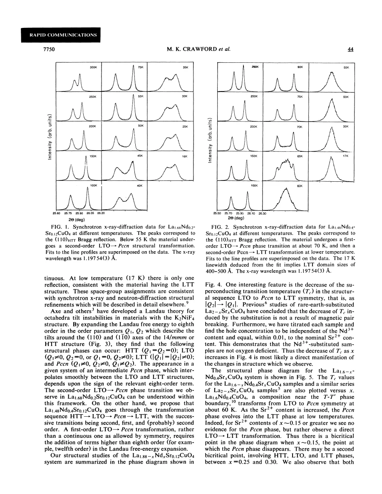
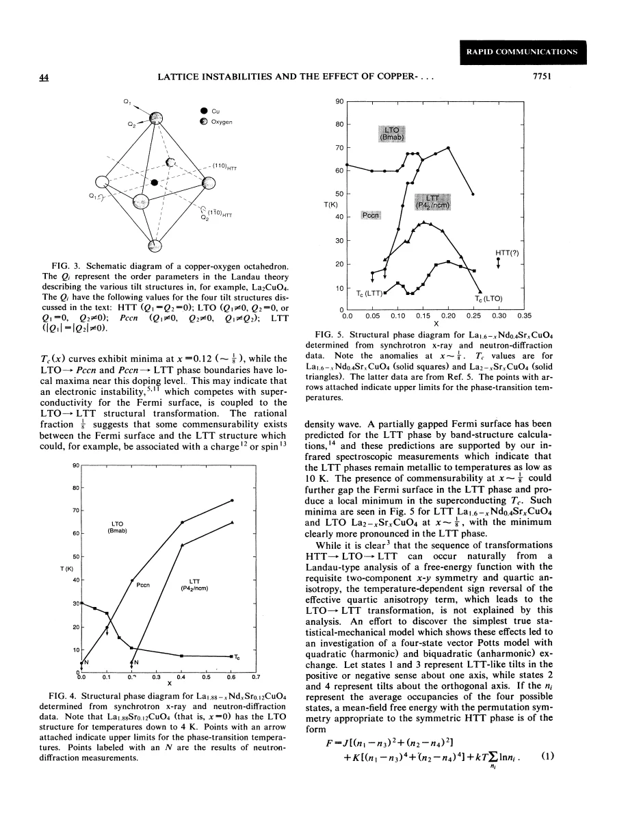

experiment and theory · Crawford · supplied source 1991
Lattice instabilities and the effect of copper-oxygen-sheet distortions on superconductivity in doped La₂CuO₄
Isovalent Nd substitution changes tilt symmetry and depresses Tc at nearly fixed hole concentration, including an intermediate Pccn phase.
The question: How can the effect of lattice distortion be separated from changing the nominal number of holes?
Before you start: the few terms you need
- isovalent substitution: replacing an ion without changing its formal charge
- Pccn/LTLO: tilted structure intermediate between LTO and LTT
- order parameter: components describing a symmetry-breaking displacement
See → explain → test
Understand it in four pictures.
Picture 1 / 4
Use two chemical controls
Look for: Distinguish Sr-driven holes from Nd-driven structural changes.
Swipe across the picture to read every label, or enlarge it below.
- Change Sr²⁺
- Change Nd³⁺ at fixed Sr
Titration supports the fixed-hole comparison; chemistry is not an ideal disorder-free control.
Nd changes the rare-earth environment while Sr primarily sets the hole count.
Picture 2 / 4
Resolve the intermediate structure
Look for: Compare the lower-temperature diffraction sequences at two Nd concentrations.
Swipe across the picture to read every label, or enlarge it below.
- One nonzero tilt component: LTO
- Two unequal components: Pccn
- Equal magnitudes: LTT
Teaching order-parameter sequence; the transition order depends on composition.
Pccn is a real intermediate tilt symmetry rather than a label for any broadened LTO/LTT mixture.
Picture 3 / 4
Compare Tc at the same Sr content
Look for: Follow the fixed-Sr Nd series.
Swipe across the picture to read every label, or enlarge it below.
- Hole count nearly fixed
- Tilt symmetry changes
- Tc decreases
A structural correlation does not identify a unique electronic mechanism.
Tc decreases as the structural preference moves from LTO through Pccn toward LTT.
Picture 4 / 4
Separate symmetry model from cause
Look for: Compare Landau route classification with the proposed statistical model.
Swipe across the picture to read every label, or enlarge it below.
- Landau symmetry description
- Four-state statistical model
Model interpretation, not a direct measurement of microscopic pairing.
Allowed structural phases do not by themselves explain why the anisotropy changes sign with temperature.
Predict before revealing
Increasing Nd at fixed Sr lowers Tc while titration finds nearly unchanged hole concentration. What is the best conclusion?
Choose an answer, then compare the reasoning.
The controlled comparison supports a structural contribution and explicitly includes finite-Tc LTT specimens.
Read the answer
Lattice changes are implicated, though the electronic mechanism remains unresolved The controlled comparison supports a structural contribution and explicitly includes finite-Tc LTT specimens.
Go deeper Follow the full argument
A useful independent tuning parameter
Crawford and colleagues study rare-earth-substituted La₂CuO₄, using Sr to introduce holes and Nd to modify lattice stability. Nd³⁺ is isovalent with La³⁺, so increasing Nd at fixed Sr is intended to alter the structural environment without directly changing the formal hole count. Chemical titration finds the hole concentration independent of Nd within about 0.01 and consistent with nominal Sr content, with no inferred oxygen deficiency. This is stronger than simply assuming identical holes from nominal formulas. It still does not eliminate substitution disorder or all local chemistry differences. The comparison asks whether the lattice can influence superconductivity substantially even when the main carrier-count control is held approximately fixed. Average charge constancy is a checked control, rather than a complete removal of disorder.
The observed transition sequences
At fixed Sr content near 0.12, different Nd concentrations give different routes on cooling. A sample with Nd content 0.2 transforms from LTO into Pccn near 55 K with continuous behavior. At Nd content 0.4, the lower transition near 70 K is interpreted as first-order LTO to Pccn, followed by a probably continuous transformation to LTT at lower temperature. The diffraction line evolves from an orthorhombic pair through intermediate splitting to a single low-temperature component, with the lowest-temperature width indicating limited structural domains. A second series at fixed Nd = 0.4 varies Sr and changes the stability of Pccn and LTT. Near Sr content 0.15 the intermediate phase disappears, giving a proposed bicritical region. Thus neither the transition order nor the existence of an intermediate phase is universal.
The two-component language
The coordinates Q₁ and Q₂ represent tilts about the two diagonal axes of the HTT plane. HTT has both components zero; LTO has one nonzero component; Pccn has two unequal nonzero components; LTT has equal magnitudes. Equal components in this basis correspond to a bond-axis tilt in the original HTT plane, rather than two independent equal bond distortions everywhere. The intermediate Pccn structure retains reduced orthorhombic strain and permits a continuous orientation change. An eighth-order Landau expansion can allow continuous transitions through Pccn. The observed first-order LTO–Pccn route requires additional higher-order terms, suggested to be twelfth order. The model describes which symmetries and routes are possible; it does not automatically explain the microscopic temperature dependence of the coefficients.
Superconductivity and the one-eighth anomaly
At fixed Sr content the superconducting transition temperature decreases as Nd drives the structure from LTO through Pccn to LTT. The authors argue that the titrated carrier constancy makes structure a likely contributor, rather than an unnoticed loss of holes. Importantly, finite superconducting transition temperatures occur in LTT samples, so this paper does not establish that LTT universally forbids superconductivity. In the Sr-dependent phase diagram, Tc has a minimum near x = 0.12 while structural transition boundaries show local maxima. The rational composition close to one eighth motivates a possible commensurate electronic instability. Charge- or spin-density-wave interpretations and a partially gapped Fermi surface are discussed, but the paper does not directly observe the later-established electronic stripe pattern.
Why a statistical model is proposed
The authors supplement the Landau picture with a four-state vector model that represents alternative tilt directions. Harmonic and higher-order interactions compete with configurational entropy, offering a way for preferred orientation to change with temperature. This addresses an important gap in pure symmetry reasoning: one can write a coefficient that changes sign without knowing what physical competition makes it do so. The model demonstrates a possible mechanism, rather than uniquely deriving the parameters from the material. Likewise, the observed structural–Tc relation does not decide between changes in electronic density of states, charge order, magnetic effects or other consequences of plane distortion. Read the result as a carefully controlled structure comparison with specific intermediate-phase evidence, and keep its electronic explanations at the level the experiment supports.
Translate the mathematics Key equations and symbol meanings
Read the evidence A guided look at the original figures

Open the full original page ↗

Open the full original page ↗
What this paper does—and does not—establish
- Titration constrains average holes, not every local electronic effect of Nd substitution.
- Electronic commensurability and density-wave mechanisms are proposals, not direct stripe measurements.
- Transition order and intermediate-phase stability vary with composition.
Explain it back.
Try answering aloud before opening the explanation.
What separates Pccn from LTT in this basis?
Both have nonzero components, but Pccn has unequal magnitudes and LTT equal magnitudes.
Does Nd directly add nominal holes?
Nd³⁺ replaces La³⁺; the source's titration checks the approximately fixed hole count at fixed Sr.
Why is an eighth-order model insufficient for one observed route?
A first-order LTO–Pccn transition requires higher-order contributions than the continuous route allowed by that expansion.
Connect the next paper.
Source version, reading coverage and preservation
Complete four-page text read; rendered pages 2–3 inspected for diffraction, component definitions, phase diagrams and model equation.
Reviewed body pages: 1, 2, 3, 4. References are not independently re-read; no separate supplement supplied.
Original file retained byte for byte. SHA-256: 75a48386988b1c07e1183d38e580cf1fd31990d96a9d9b25a65e4a09fa7ed687
Filename: PRB - Crawford - Lattice instabilities and CuO2 distortions in doped La2CuO4 - 1991.pdf.